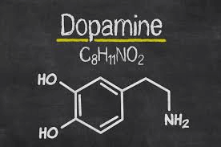

Living in Technicolor: The Significance of Synesthesia
Famesh Patel. 7/24/2020
Close your eyes, and imagine a world where you can smell colors, see music, or taste words. Where musical notes create a swirl of colors or reading one’s name causes different tastes. Now open them again. You have just entered the world of synesthesia.
As defined by Psychology Today, synesthesia is a neurological condition in which stimulation of one sensory or cognitive pathway (for example, hearing) leads to automatic, involuntary experiences in a second sensory or cognitive pathway, such as vision. In other words, the triggering of one sense can trigger another unrelated sense as well. Synesthesia is the Greek word for “joined perception,” and it can involve mixing any of our senses, creating sixty to eighty subtypes of synesthesia. A synesthete is a person who is affected by this disorder. However, it is more common for the condition to help rather than hurt the “victim.”
According to SciShow, researchers at Baylor University have discovered a region on chromosome 16 that causes the most common form of synesthesia, known as “colored sequence synesthesia.” This particular synesthesia occurs when non-visual senses trigger a person to see colors. For example, hearing the world jail can cause a person to see the color gray, or the name Derek can be seen as purple. This helps the patients associate color with certain names or scents and helps increase memory for certain objects.
So what is going on inside the brain of those who have synesthesia? Why do synesthetes experience what they do? There are a couple of theories. The first theory is that there is something wrong with their neural structures. Scientists believe that our senses are all jumbled up when we are initially born; however, as we grow older and our brain matures, the senses start to become more distinct. In synesthetes, the distinction between senses is not made, and therefore one sense ends up easily triggering another sense.
Another reason that researchers think synesthesia may occur is because of chemical messengers in the brain. Our body has neurotransmitters that help cause a certain reaction in the body, such as dopamine (which leads to happiness), and adrenaline (which leads to the “fight or flight” response). In this theory, scientists think that a synesthete may have neurotransmitters that can trigger a certain sense to be in another part of the brain. Either that or the person might lack inhibitors, which control neurotransmitters.

But because the brain is so complicated, it could potentially be both of these activities combined causing synesthesia.
But how do synesthetes go about their day? Many people with synesthesia believe that their life would be more boring without it. They believe their lives are more colorful and interesting with an extra sensory flair. Some even claim that synesthesia leads to increased memory and creativity. Others can remember names with colors. For example, people might associate a certain number with a specific color, so they can now remember a certain string of numbers based on the color sequence.
If you or someone you know has synesthesia, be glad that you are part of the lucky 2% of the population with this rare condition - so use your potential to the fullest!